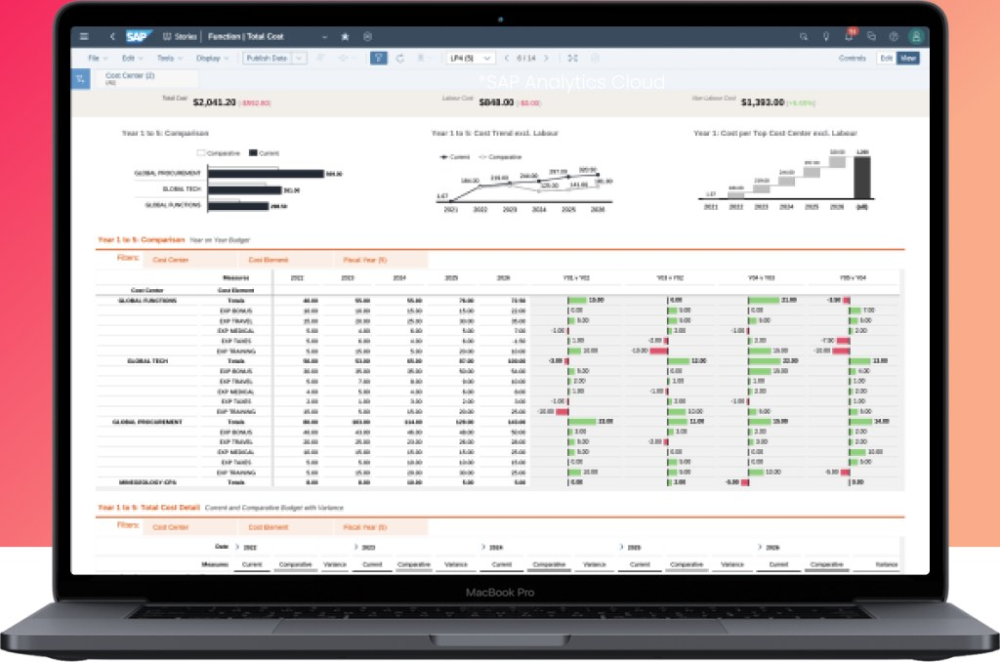
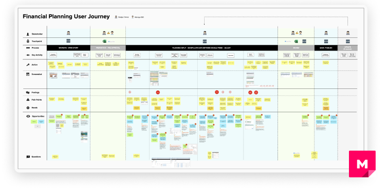
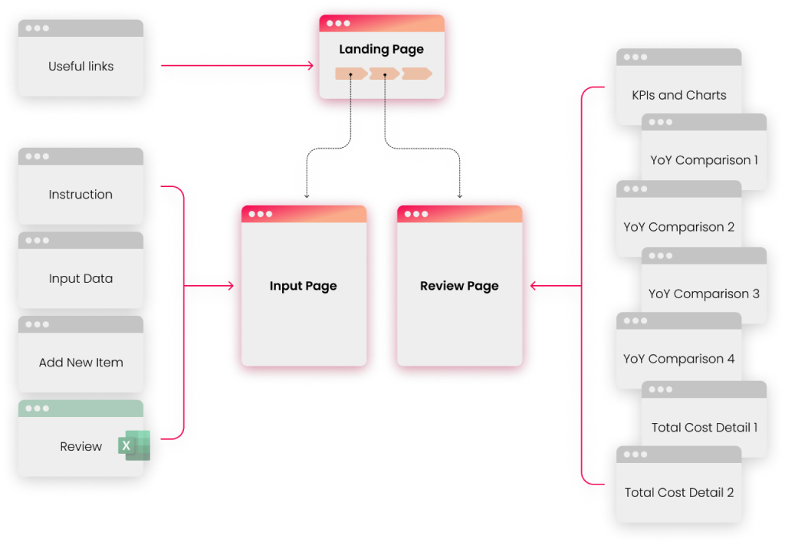
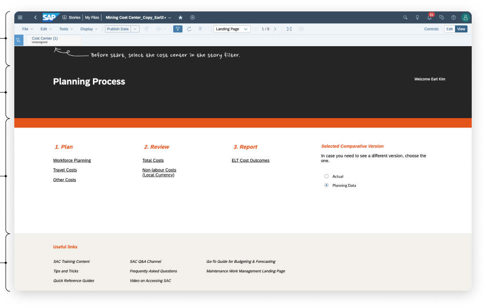
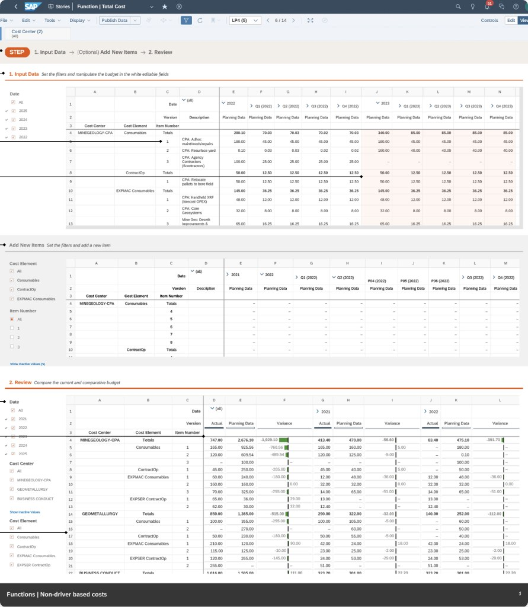
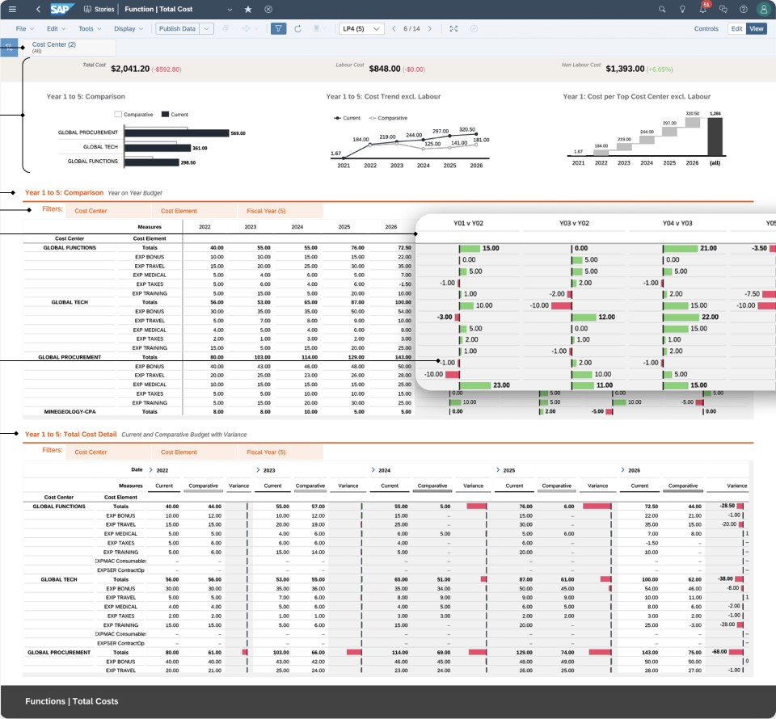

BHP, an Australian mining company, needed its financial planning in SAP Analytics Cloud to keep up with a changing process. Working with BHP's UX designer and the SAC product team, I simplified the experience and made it more enjoyable.

I analyzed recorded remote interviews in which finance professionals shared their screens, showing their process and personal workarounds. I mapped pain points, opportunities and ideas onto the planning journey.

How might we make the financial planning experience in SAC fast, intuitive and enjoyable?
I split the process into two main sections — data input and review — combining 10 tables on 5 screens into 4 tables on 2 screens, with a landing page tying them together.

One place to reach every page and resource needed for planning, replacing scattered entry points: plan, review and report.

Tables arranged in sequential steps with optional steps set apart. Excel-like grid headers, editable versus read-only cells, totals and frozen headers build on what finance users already know.

Six scattered tables consolidated into one page: a five-year overview chart, year-over-year comparisons, and detailed tables — no need to jump between pages.

“The design solutions provided by Earl and his colleague were of high quality and extremely useful. Always willing to listen and dive into the underlying problems, which led the team to propose new and innovative ways to resolve the problems we shared with them.”